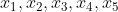
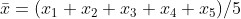

第 2 章 统计学——收集和分析数据的学问
2.1 什么是统计学
在日常用语中，“统计”相当于“计数”。小至一个家庭、单位，大至一个国家，都有许多计数即统计的工作要做。世界各国大都设立了中央到地方的各级统计机构，负责收集关于人口、经贸、社会等各方面的数据资料。在一定意义上，这种活动可视为“统计学”这门科学的起源。丹麦统计史学家哈尔德认为，“统计学”和“统计学家”等词源出于意大利，统计学即国情学，对象是国务活动家感兴趣的事实，而统计学家则是“处理国务的人”。在这样广泛的意义下，统计学简直是无所不包了。经过演变，到 19 世纪，统计学定位为一门关于收集和分析数据的科学，但不涉及数据所来自的具体学科领域的研究。例如，一个统计学家可以帮助生物学家处理其工作中涉及的数据收集和分析问题，但统计学并不去研究生物学自身的问题。
用实证的方法研究问题，都要涉及收集数据以及对数据进行整理和分析，统计学就是研究做这些事情的方法和理论的学问。《不列颠百科全书》对统计学所下的定义是：“统计学是关于收集和分析数据的科学和艺术。”这里特别提到“艺术”一词。当然，统计学是科学，不是像音乐、美术那样属于艺术的范畴。这个提法有其深意，后面会有机会说明这一点。
这个言简意赅的解释，突出了统计学研究对象的两个方面：收集数据，分析数据。收集数据是为了解决某一应用或理论上的问题。但单有一堆杂乱无章的数据，用处不大。我们需要去整理数据，从中发掘有用的信息并用适当的形式表述出来，然后用科学的方法进行分析，以针对所研究的问题得出一定的结论。例如，若要了解某城市某行业工人的收入情况，涉及的人数可能以万计，有关数据（如月收入）可以订成一本几百页的册子，我们很难直接和方便地从中得出什么有用的结论。如果数据经过整理，比如说以 50元为间距将各段收入的人数及其在全体人数中所占的百分比列成一个表，那么它就可以告诉我们不少东西。我们也可以按一定的收入标准划分出贫困、温饱、小康和富裕几大类，使用图表显示出各类别的人数和百分比。我们还可以通过与本行业过去的资料进行比较，或与其他行业横向比较，做进一步分析，等等。这类调查研究在新闻报道和各种出版物中不时有所提及。
从历史上说，最早对大量统计资料进行系统整理并出版专著的，要推 17 世纪英国学者格朗特（1622—1674）。他是伦敦一家服装店店主的儿子，早年在店里作为他父亲的一名助手，后来子承父业。工作之暇他刻苦学习，靠自学成才。他生活的年代正好是黑死病在欧洲流行之时。这是一种可怕的传染病，夺去了许多人的生命。由于这个原因，自 1604 年起，伦敦教会每周发表一次“死亡公报”，其中记录了一周内死亡和受洗者（大致可反映出生人数）的名单。死亡者按其死因分类，如 1632 年的公报中包含了 63 种病因，自 1629 年起男女分开统计。多年以来，在这些公报中积累了庞大的数据，但在格朗特之前，无人对其进行过整理和分析。格朗特是第一个从事这项工作的人，其成果集中在他 1662 年出版的《关于死亡公报的自然和政治观察》一书中。书中包含 8 张表，从各个方面对公报中包含的数据进行了总结，并据此做出一系列的推论。此书对后世有很大的影响，有的统计学家甚至主张以此书出版之日作为统计学诞生之时。在该书出版的 1662 年，英国成立了皇家学会。格朗特因此书而在当年被选为会员，足见此书在当时也得到了很高的评价。
在以上的讨论中未提及一个重要之点，即按现代的理解，并不是任何类型的数据的收集和分析问题，都属于统计学的研究范围。只有那种受到偶然性因素影响的数据，才是统计学处理的对象。受偶然性影响的数据按其在实际问题中表现的方式，有 3 个大的类别，下面我们来分别举例说明。
设问题是要比较两个省的农民的收入情况，而因条件所限，不能采用普査的方法，只能从这两个省的农民中各抽取若干人做调査，以这些人的数据作为比较的依据。这些人如何抽取，要遵从不偏不倚的原则，以保证省内每一个农民有同等的机会被抽到。最终谁能被抽入样本，纯属偶然。因此，从抽出的人那里测得的数据（如上年纯收入）也就有偶然性了。凡对一个大群体的状况进行研究而不能对其个体进行普查时，就只能从该群体中抽取若干个体作为代表，因而所得数据就有偶然性。在上例中，如因偶然的作用使某省抽取的农民中，富裕者（或贫穷者）偏多，则比较的结果将会有偏差，偏差的大小及其出现的机会（概率）有多大，就是在分析数据时所要解决的问题。正是这一点标志着统计学的特色：如果设想你做了普查，而对每一农民收入的调査又准确无误，则为了比较这两省农民平均说来谁富一些，只要把所得数据相加，再做个除法求出平均值就行，且不存在结论出现偏差的可能，这样的工作与我们这里讲的统计学无关。
再考虑一个例子。设想你有一颗价值很高的钻石，想用一架天平尽可能准确地称出它的重量有多少。如果该天平毫无误差，则只要称一次就够。但天平总会有些误差，为得到更准确的结果，决定在天平上重复称 5 次，得到数据

。这是含有误差的数据，误差多大，由种种偶然性的因素（环境因素、人操作上的不小心等）所决定，其值在各次称量时都可能不同，无法确知，但会遵从一定的概率规律。分析这种数据就是统计学的任务。例如，常人大众也会使用的一个方法是，把 5 次称量的结果取平均值，即
，去估计钻石的重量。大家也相信，一般讲这比只称一次要准确，其实这正是统计学家常用的一个重要方法。不同之处在于，统计学家对平均值做了深度的分析，可对其误差做出数量上的界定。对数据的统计分析也能表明，在某种条件下，取平均值是最好的方法。比如说，可以设想另外一种做法，把测得的 5 个数据按大小排列，取其正中间的一个（即第 3 个，在统计学上称为中位数）作为估计值。这个方法看上去很合理，但究竟选哪一个更好？这样做又是为什么？在什么条件下才可以这样做？这就涉及统计分析中很深刻的理论问题。作为数据受偶然性影响的另一重要类别的例子，我们来考虑一个农业试验问题。该试验的目的是比较一些对某种农作物的产量可能有影响的因素，例如有几个种子品种、几种可能的播种量和施肥量。在进行田间试验时，划出一些形状和大小一样的地块，每块地上做一种按试验方案选定的处置。例如，有几块地是用某一指定的品种、播种量和施肥量，另几块地用其他的配置，等等。我们会发现，即使是使用同一配置（相同的品种、施肥量和播种量）的一些地块，其亩产也各有不同且带有一定的偶然性，这是因为有大量的未予控制或不能控制的因素存在，影响了产量。前者的例子如田间管理，当一个试验由许多人去做时，各人工作的精粗不同。后者的例子，如试验田的各地块的条件（位置、地力等）有些差别，而哪一个地块使用哪一种配置是用随机方式决定的。外界环境因素（气候、虫害之类）对各地块的影响也有些差别，这都会使所得数据包含一定的偶然误差。前一方面的因素经过人的努力，可以缩小其作用（当然要付出代价，而且有一个值不值得的问题），这是与天平称物的例子的不同之处。工业试验的情况与此相似，所要解决的问题，不少是要在若干可供选择的配方和生产条件（温度、压力、反应时间等）中，确定一种最优方案。在这里，试验数据也会受到大量因素的影响而使其带有误差。这些影响因素中，有的是经过一定努力和付出一定代价可以控制的，这样可使误差缩小，有的则纯以偶然的方式起作用而不可控。
到此，我们可以对“统计学是什么”这个问题给予一个比较完整的回答。统计学是有关收集和分析带随机性误差的数据的科学和艺术。分析着重在数量化，而随机性的数量化，是通过概率表现出来的，由此可以看出统计学与概率论的密切关系。本书的重点在统计学，却以概率论开篇，就是这个原因。大体上说，二者的关系是：概率论是统计学的理论和方法的依据，而统计学可视为概率论的一种应用。
生产、科技等各个领域无不涉及数据分析问题，所以，有一个统计学与这些领域的界线如何划分的问题，这问题要从两个方面来谈。首先，统计学是一门数学科学，它既不包含上述领域，也不被这些领域所包含。这与数学一样。数学是研究“数”和“形”的科学，数和形都在各种应用领域出现，有其实际背景，数学把其中有共性的东西抽象出来加以研究，其结果可用于各种领域。统计学也如此，各种不同应用领域，其数据内容、形态也各有其特点，但也有其共性的东西，统计学把这些共性的东西抽象为模型，其研究结果可用于各种实际问题。一个例子是“盒中抽球”的模型，该模型的数据分析可用于像不合格品率的估计、文盲率的估计之类的问题。另一个例子是上一章介绍的正态分布，它可以用来描述形形色色的、从各种不同的实用领域中产生的数据。正因为这一点，以研究收集和分析数据为任务的统计学常被称为“数理统计学”，以突出它是一门数学学科这一性质。
另一方面，由于统计学是实用性很强的科学，其生命力和发展动力，在于它与实用学科的密切联系。割断了这种联系，统计学就会变成无源之水，无本之木，产生不出有意义的问题和方法。因此，统计学与其他学科和领域所形成的边缘和交叉性质的学科也特别多，如工业统计学、农业统计学、生物统计学、医药统计学、可靠性统计与生存分析（研究元件、系统的可靠性与生物寿命的数据分析问题），以及诸如人口统计学、数量经济学（其中用到很多统计学方法）之类的社会科学交叉科学。
从统计学家本身说，为了更有效地将统计学方法应用于某一领域，有必要对该领域有关的知识有一定的了解。例如参加一个化工方面的应用项目，该采用什么样的统计模型和统计方法，怎样去判断所用模型是否恰当，数据是否有问题，分析的结果该如何解释，这些问题的解决固然需要统计学的知识，但与该问题有关的专业化工知识，也是不可或缺的。统计学家可以与化工专家合作并向后者请教，但终究不如自己能有第一手的了解更为有利。统计学方法中包含不少的数学公式，但使用统计学方法解决实际问题，并非机械地套用公式了事。在某种程度上，用统计学方法解决问题好比医生给病人治病。好的医生要根据实际情况灵活地使用他的专业知识，并具备丰富的实践经验。从这个角度看，虽说不能讲统计学本身是一门艺术，但可以说，在一定程度上，统计学方法的有效使用是一门艺术。
如上所述，统计学研究的对象，一是如何收集数据，一是如何分析数据。关于收集数据有两种情况，一种是自一个大群体中抽取一部分个体，对他们测量所关注的指标（如人的体重、农民的年纯收入）。一种是通过做试验来产生数据（天平称物、试验田的产量等）。针对前一种情况，统计学中有一个叫作“抽样调査”的专门分支学科去研究。针对后一种情况，统计学也设有专门分支，叫“试验设计”。有关的内容将在接下来的两章进行讨论。至于分析数据，涉及的方面繁多，因为实际问题的提法，所要求的结论的形式，都是多样化的，以后我们将结合一些常用的重要情况来加以介绍。在本章的以下部分，我们对统计方法的特点做些进一步的解释，目的是更清楚地说明，统计学方法有别于其他数学方法的特征在哪里。读者在中学数学课中，学习了不少数学方法，如几何学中有证题、推理和作图的方法，代数学中有解方程的方法，等等。统计学方法作为一种数学方法，有哪些自己的特点呢？这就是以下几节要回答的问题。